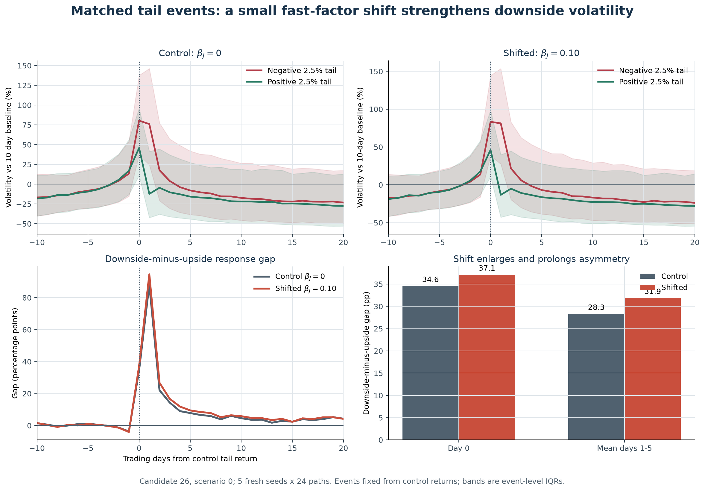
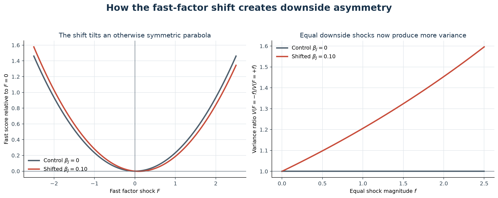
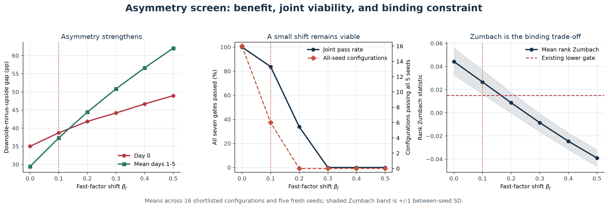
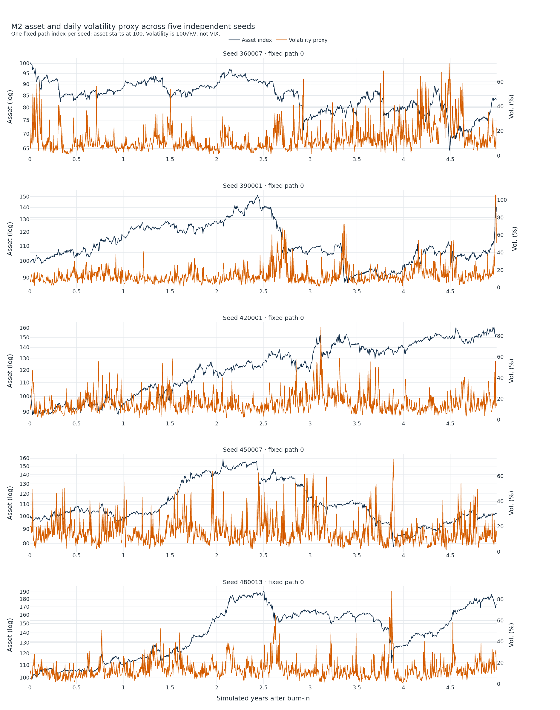
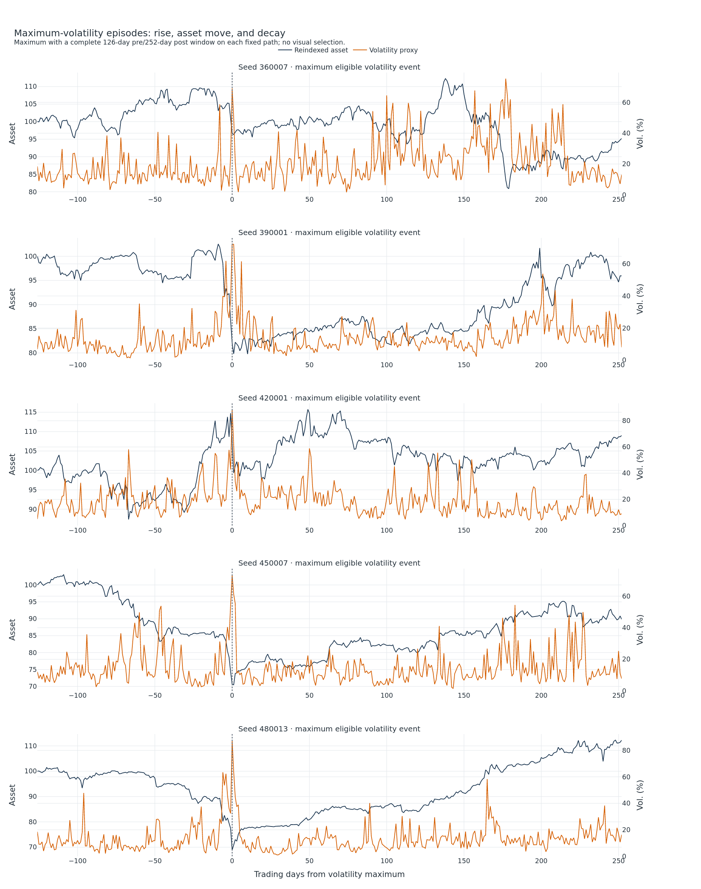
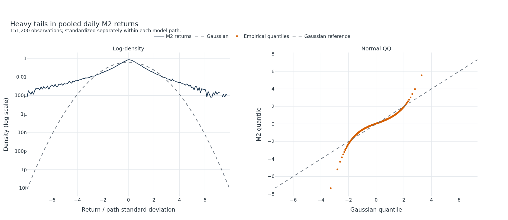
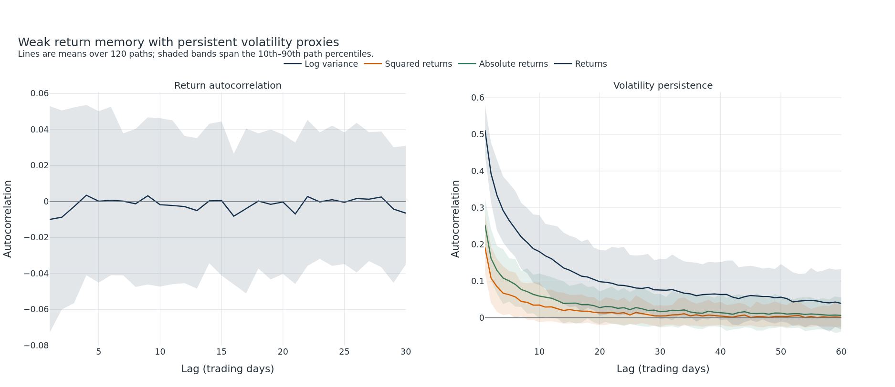
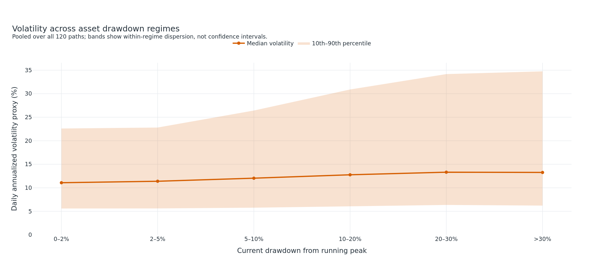

M2 visual diagnostics: baseline and downside-asymmetric extension
Comparison design. The first three figures compare the exact zero-shift control with βJ = 0.10 using common random numbers. Tail-event dates are fixed from the control returns. The remaining figures document the preserved Stage-3 baseline. Volatility is 100 × √(daily average instantaneous variance), not formal VIX. These are synthetic mechanism diagnostics rather than market calibration.
Asymmetric leverage event study

Mechanism: shifted fast parabola

Asymmetry-versus-Zumbach trade-off

Baseline paths

Baseline maximum-volatility windows

Baseline return tails

Baseline dependence

Baseline drawdown and volatility
